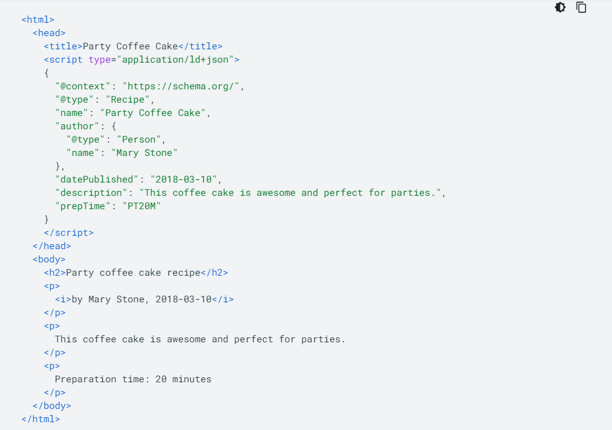

SEO
SEOとはsearch engine optimizerの略であり、その意味は簡単に言うとwebサイトをコンピュータにも理解できるようにするということです。一見これはなぜ必要なのか分からない人も多いと思います。しかし本章を見た後、きっとその考え方も変わるはずです。結論を言うと私たちの作ったコンテンツが正しく世界中の人々に感動を与えるために、webページは、一度クローラーと検索エンジンというプログラムを介してから検索結果に現れるということです。もしこれらのプログラムを介さなければ、せっかく作ったwebサイトは検索結果に現れず、ネットを彷徨う悲しき遺物となることでしょう。本性はそうならないための対策をメインに取り扱います。
クローラーと検索エンジンについて
SEOについて知るにあたって、私たちの目標を明確にするとクローラーと検索エンジンに対してわかりやすいプログラムを書くことです。そのためにこれらのプログラムについて深く知る必要があります。クローラーの役割は、世界中にあるwebページを巡回し新しい情報はないか確認し各ページのurlと全ての単語をまとめたデータをGoogleのデータセンターに登録することです。検索エンジンの役割は、そのデータベースから検索ワードに合わせた適切なwebページをランキング付けして検索結果に羅列することです。このランキングシステムのおかげで私たちは、玉石混交の情報の海から適切なコンテンツを見つけることができる訳です。では適切なコンテンツとは、どのようなものなのでしょう。
価値ある情報共有
インターネットの役割として価値ある情報共有が挙げられます。これはインターネットが元々は科学者たちの論文を共有する仕組みだったことを考えると、インターネットは元来論文などの価値のある情報をより多くの人に見てもらうためのものであるので、適切なコンテンツとは、価値を持たなければならないことがわかります。しかし価値観の変化した現在では、価値のある情報とは論文のような学術的な内容だけではなく他の要因による価値を生み出すこともあります。そこで以下では、webコンテンツの価値を決定する要因とその対策について説明します。
リンク
サブタイトルとか(なくても良い)
＃＃＃＃＃＃＃＃＃＃＃＃＃＃＃＃＃＃＃＃＃テキストはこの辺を利用してください＃＃＃＃＃＃＃＃＃＃＃＃＃＃＃＃＃＃＃＃＃＃＃＃＃＃＃＃＃＃＃＃＃＃＃＃＃＃＃＃＃＃＃＃＃＃＃＃＃＃＃＃＃＃
構造化データ
そもそも構造化データとは
構造化データとは、検索エンジンがページの内容を適切に認識できるように、検索エンジンにコンテンツを伝えるために サイトのページに追加できるコードです。より分かりやすく言えば、ページ内の内容が何を表しているか（例えば「田中太郎」 という文字は人の名前を表している。）をコンピュータに分かりやすくするためのコードです。
上記にあるように、サイト作成者がどれだけ人間に分かりやすいような見た目、デザインでサイトを作成しようとも、 現在のシステム上、クローラと検索エンジンがその内容を理解することができなければ、あなたの発信したい内容、情報が それを求めている人に届く確率は下がります。以下では、具体的にどうやってコンピュータに内容を適切に伝えていくかを 解説します。
JSON-LD
Googleが現在推奨しているのがJSON-LDというシンタックス（構造化データを記述する書き方や仕様）で、今回はこれを 解説します。
JSON-LDの特徴は、HTMLのpタグなどとは別にscriptタグの中に記述できることです。bodyタグ内に記述した内容が何を意味しているか （メタデータ）を以下のようにして記述します。
基本となる部分を説明します。JSON-LDでは、まず、<script type="application/ld+jdon>という部分でJSON-LDを 使用していることを明記し、記述した後に</script>を記述します。次にJSON-オブジェクトというものを記述しますが、 これは｛｝（波括弧）で囲われた部分を指し、KeyとValueと呼ばれる部分からなります。それぞれを”（ダブルクォーテーション）で 囲み、互いを：（コロン）でつなぎます。Keyはプロパティ（属性、例えばname）を表し、Valueは値（例えば「田中太郎」など）を 表します。このようにして、コンピュータは「田中太郎」がname（名前）であることを理解します。
次に、代表的なKeyをいくつか説明します。@contentという部分は、そのメタデータを解読するときにコンピュータ側が参照する
辞書のようなもので、基本的にはshema.orgを用います。nameは名前であることを示すものです。
詳しくは以下のドキュメントを参照してください。ここを変えたいのにpushできない
https://www.w3.org/TR/json-ld11/
リッチスニペット

スニペットとは左の画像のような検索結果の時点でwebページの内容が少しわかるあれです。
上の方がレビューなどを見れてユーザーの注目を集めやすいということがわかります。このようにスニペットをリッチにすることは、SEO対策にもなり得ます。

ホームページサンプル株式会社では最新技術と自然との調和を目指します。革新的な革新的な革新的な技術で世の中を技術で世の中を技術で世の中を動かす企業を目指します。
ホームページサンプル株式会社。ホームページサンプル最新技術と自然との調和を目指します。革新的な技術で世の中を動かす企業を目指します。ホームページサンプル株式会社。ホームページサンプル最新技術と自然との調和を目指し調和を目指し調和を目指します。革新的な技術で世の中を動かす企業を目指します。
コンテンツの属性
ナレッジグラフ
サブタイトルとか(消してもいいよ)
＃＃＃＃＃＃＃＃＃＃＃＃＃＃＃＃＃＃＃＃＃テキストはこの辺を利用してください＃＃＃＃＃＃＃＃＃＃＃＃＃＃＃＃＃＃＃＃＃＃＃＃＃＃＃＃＃＃＃＃＃＃＃＃＃＃＃＃＃＃＃＃＃＃＃＃＃＃＃＃＃＃
サンプル(こんなのもできるよ)
-

画像の真下に表示される文章です
-

たくさんは書けません
-

リストは必要に応じて加えたり減らしたりしてください。